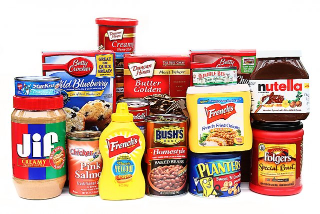

Le 4L Trophy
Le 4L TROPHY est une idée de Jean-Jacques Rey, « Ce plaisir pur d’aller braver les grands espaces entre potes », il veut le partager et il se dit que c’est peut-être jouable à petit budget. C’est très vite testé sur les pistes marocaines à bord de la mythique et passe-partout Renault 4L. Voilà pour le pari relevé en 1997, par trois valeureux équipages qui ont écrit les premières pages de cette belle histoire, armés d’un road book et d’une boussole.
Et depuis...
Une génération plus tard, le 4L TROPHY. C’est toujours un rallye d’orientation conviviale, une joyeuse caravane de plus de 1200 4L qui s’aventurent jusqu’aux dunes du Sahara. C’est le plus grand rendez- vous des jeunes et des étudiants, l’événement ultime de tous les défis, le plus gros événement sportif et solidaire d’Europe dédié aux 18-28 ans, de toutes nationalités... Il réunit chaqueannée une grosse bande de copains (jusqu’à 2400 !) et autant de boussoles, qui traversent l’Espagne et découvrent le Maroc ensemble, de Tanger à l’Atlas, de Merzouga à Ouarzazate, du Tichka à Marrakech.
Au programme
Pas moins de trois pays traversés, douze jours en immersion pour découvrir le Maroc, des épreuves d’orientation jusqu’au pied des dunes du Sahara et une étape marathon de 48 heures en autonomie avant le retour à Marrakech. Le tout, à ta vitesse de croisière, car ici, pas de chrono mais un classement uniquement basé sur le kilométrage parcouru. Cerise sur le sundae, en participant au 4L Trophy, tu prends part à un élan de solidarité immense pour accomplir une mission engagée et durable auprès de l’association Enfants du désert et de la Croix Rouge française.
Le 4L TROPHY c’est un maxi rallye d’orientation conviviale et à la boussole : des jeunes, des 4L et un superbe périple jusqu’aux dunes du Sahara.
Dons pour les Enfants Du Désert :

2 sacs de sport remplis de matériel de sport : Vêtements de sport, ballons de football, de basket, pompes, balles, cordes à sauter, frisbee...
2 cartables remplis de fournitures scolaires : crayons, crayons de papier, crayons de couleurs, stylos, gommes, taille-crayons, règles, matériel de géométrie, peinture, pinceaux et cahiers

10 kg de denrées alimentaires non périssables : conserves (légumes, raviolis, thon, sardine), épicerie salée (pâte, riz, semoule, sauce, huile), épicerie sucrée (confiture, thé, café), petits pots pour bébé, produits d’hygiène (couche, gel douche, shampooing)